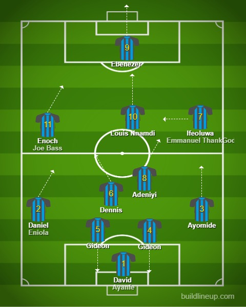

<!DOCTYPE html>
<html>
<head>
<link rel="shortcut" href="logo.jpg" type="image/x-icon">
<link rel="shortcut icon" href="logo.jpg" type="image/x-icon">
</head>
<body  style="background-image: url(p.jpg); background-repeat:round;">
    <p>This is the Logo</p>
<map name="workmap">
    <area shape="poly" coords="223,87,226,77,247,69,270,75,272,85,261,90,260,116,236,117,236,88" alt="Eben" href="bookmark.html">
    <area shape="circle" coords="239,301,55" alt="midfield" href="index4.html">
<p> r ¼ 5tan E ¼ 0:75 ;<br> E ¼ 368520 ;  ¼ 3608E ¼ <br>323880 ; z ¼ 5ðcos323880þjsin323880Þ ¼ 5b323880
    404 Programme 1<br>
    Of course, given a complex number <br>in polar form, you can convert it into b<br>asic form <br>aþjbsimply by evaluating the cosine and the sine and multiplying 
    <br>by the value of r. e.g. z ¼ <br>5ðcos358þjsin358Þ¼5ð0:8<br>192þj0:5736Þ z ¼ 4:0958þj2:8679 (to 4 dp) Now you do this one.<br> Express in the form aþjb,4 ðcos658þjsin658Þ
    52 z ¼ 1:6905þj3:6252
    Because<br> z ¼ 4ðcos658þjsin658Þ<br> ¼ 4ð0:4226þj0:9063Þ ¼ 1:6905þj3:6252 (to 4 dp) <br>If the argument is greater than 908,<br> care must be taken in evaluating the cosine<br>
     and sine<br> to include the appropriate signs. e.g. <br>If z ¼ 2ðcos2108þjsin2108Þ the complex number <br>lies in the third quadrant.<br> y Sin
    <br>
    cos2108 ¼cos308 sin2108 ¼sin308<br> Then z ¼ 2ðcos308jsin308Þ <br>¼ 2ð0:8660j0:5Þ <br>¼1:732j
    Here you are. <br>What about this one? Express z ¼ 5ðcos14
</map>
</body>
</html>